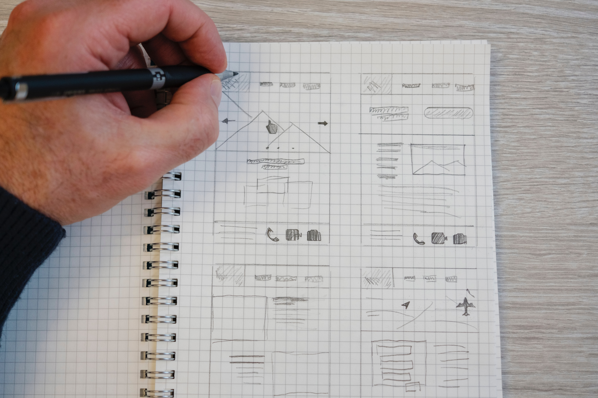

이 작업은 stackblitz의 react만드는 기능을 이용해만들어 본 것입니다.
아래의 링크를 통해 웹 페이지를 만들어볼 수 있으며, 제 웹 페이지에 게시할 내용을 만들기 위한 일종의 템플릿이기 때문에오작동할 수 있음을 미리 말씀드립니다.
또한 지금 이 페이지도 아래 링크를 통해 만들어 낸 페이지이기 때문에, 동영상은 생략하겠습니다.
html maker
첨부파일 : Kyus_htmlmaker.zip